โครงงานนี้คืออะไร?
การศึกษาและทดสอบเครื่องปั่นไฟฉุกเฉินแบบพกพาที่ใช้แบตเตอรี่สำหรับชาร์จรถยนต์ไฟฟ้า (EV)
เมื่อแบตเตอรี่รถหมดกลางทาง สามารถใช้เครื่องปั่นไฟนี้ชาร์จฉุกเฉินเพื่อขับขี่ไปยังสถานีชาร์จที่ใกล้ที่สุดได้
ทดสอบกับรถ MG ZS EV (50.3 kWh) และ RD6 (63 kWh)
ที่กระแสชาร์จ 8A / 10A / 13A / 16A เป็นเวลา 1 ชั่วโมง
🔋 แบต 72V 100Ah (7.2 kWh)
→ ⚙️ มอเตอร์ FW15-7000
→ ⚡ AC Generator
→ 🚗 รถ EV
η มอเตอร์ >91% | η เครื่องปั่นไฟ ≈85% | η charger 68-78%
η ระบบรวม = 53-60% (สูญเสียพลังงาน 40-47%)
สูตรคำนวณ:
E_แบต = E_AC / (0.91 × 0.85) ← พลังงานที่แบต 72V จ่ายจริง
E_รถ = E_AC × η_charger ← พลังงานที่รถได้รับ
Loss = E_แบต − E_รถ ← สูญเสียทั้งระบบ
2.5
kWh รถได้ (16A, 1 ชม.)
65%
แบตเครื่องปั่นไฟลด (16A)
4.9%
SOC รถเพิ่ม (16A, 1 ชม.)
1. พลังงานหายไปไหน? (Loss)
จากแบต 72V ไปถึงรถ EV พลังงานสูญเสียไป 40-47% แบ่งเป็น 3 ส่วน
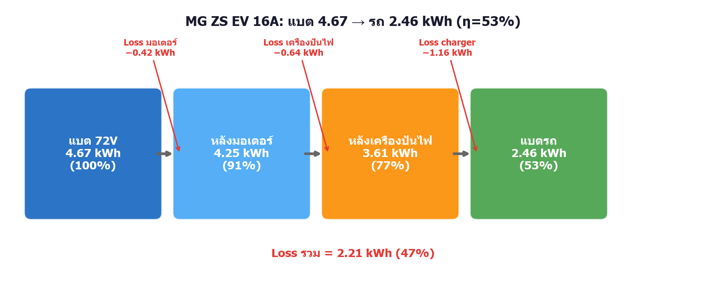
MG ZS EV 16A: แบต 4.67 kWh → รถได้ 2.46 kWh (หายไป 2.21 kWh = 47%)
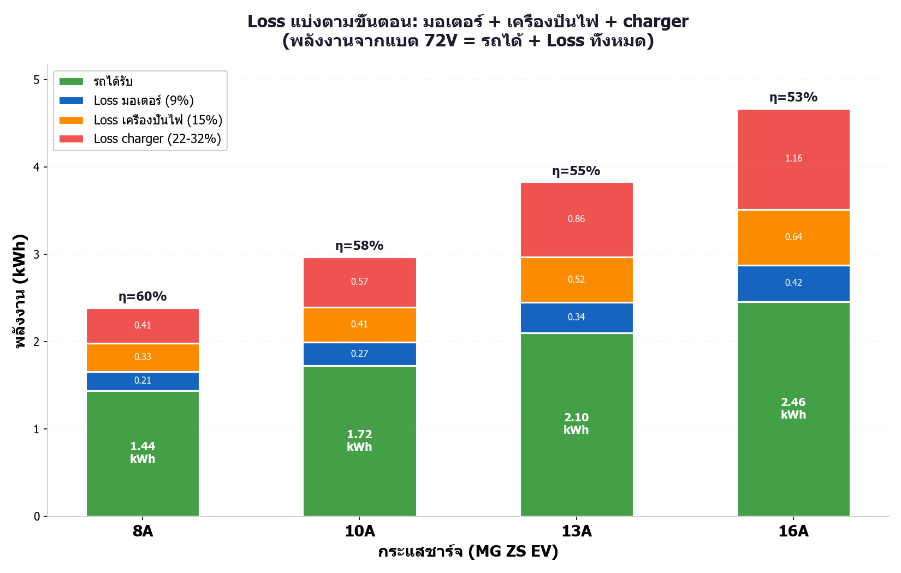
Loss แบ่งตามขั้นตอน: มอเตอร์ + เครื่องปั่นไฟ + charger
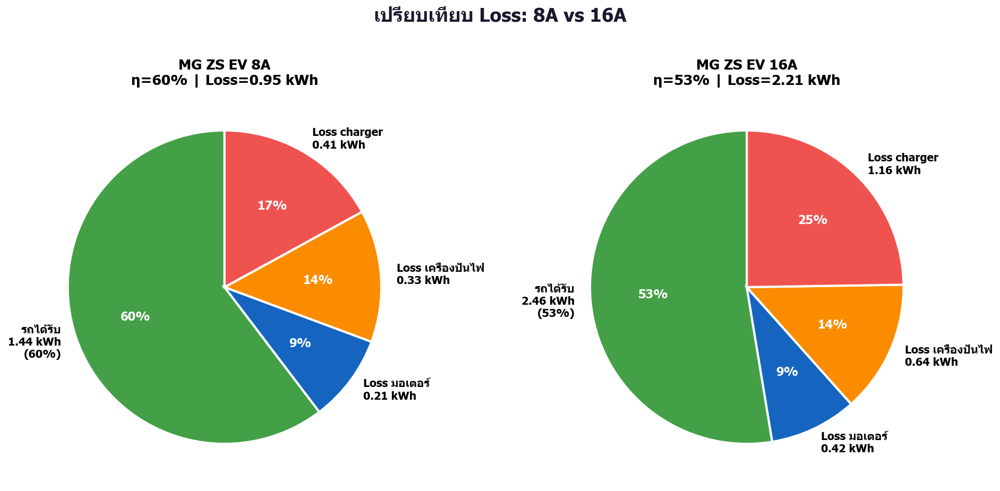
เปรียบเทียบ Loss: 8A vs 16A
2. ชาร์จ 1 ชม. → SOC เพิ่มกี่ %? (ขอบเขต 1.4.4)
เป้าหมายคือเพิ่ม SOC 10% แต่ใน 1 ชม.ยังไม่ถึง ต้องชาร์จนานขึ้น
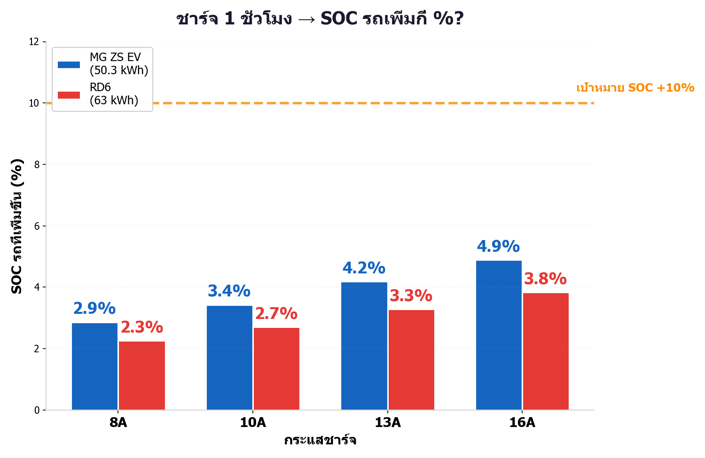
SOC รถที่เพิ่มใน 1 ชม. (เทียบกับเป้า 10%)
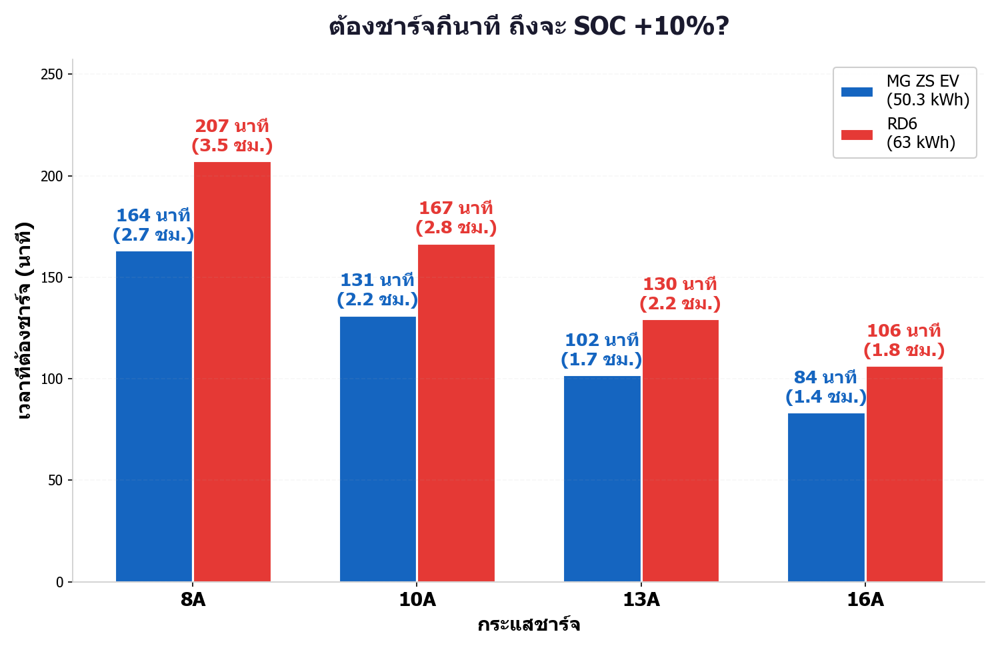
ต้องชาร์จกี่นาที ถึงจะ SOC +10%?
3. แบตเครื่องปั่นไฟ 1 ก้อน (7.2 kWh)
วิเคราะห์ว่าแบตหมดเร็วแค่ไหน (ขอบเขต 1.5.1-1.5.2)
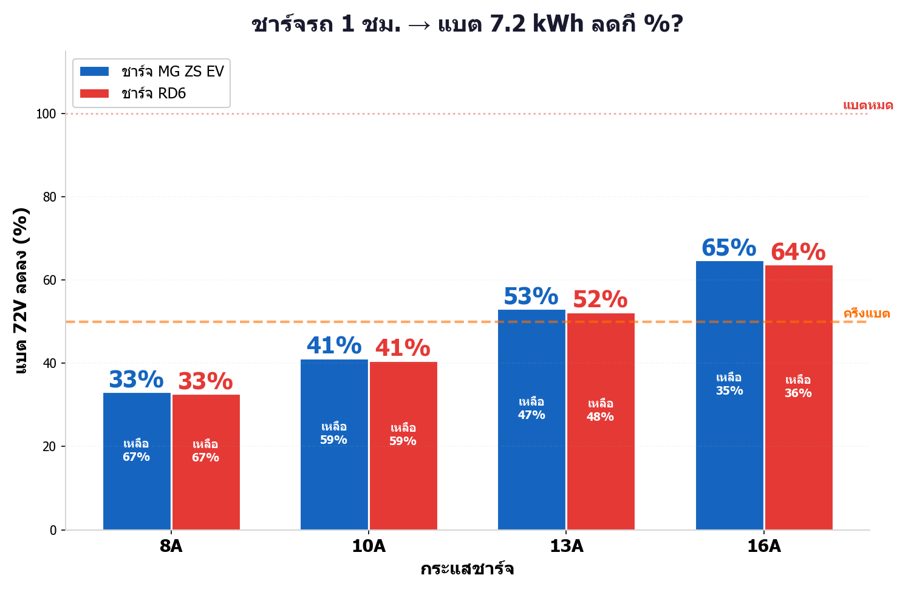
ชาร์จ 1 ชม. → แบตลดกี่ %?
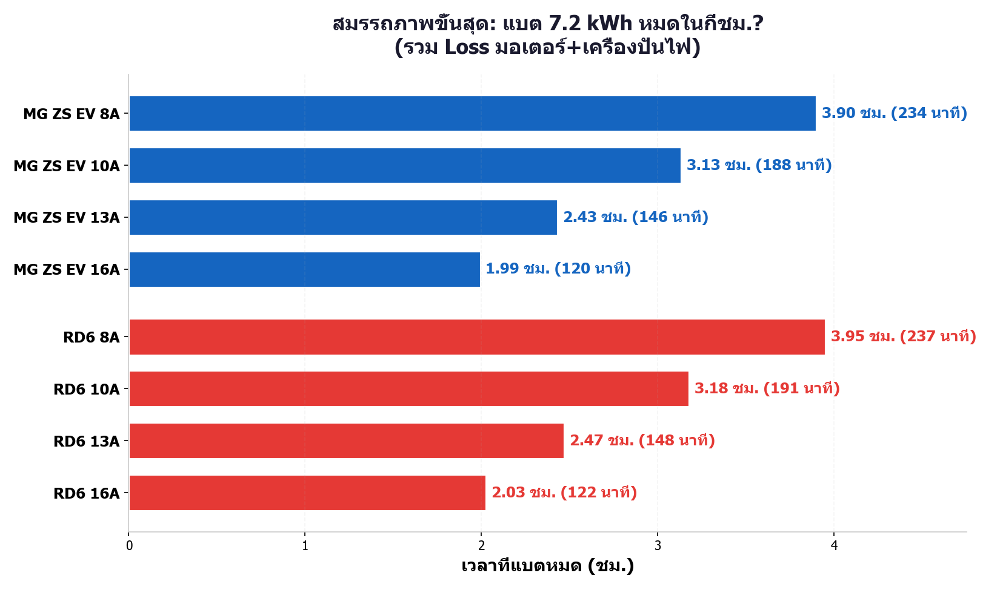
ประมาณการแบตหมด (ชม.)
4. ไฟบ้าน vs เครื่องปั่นไฟ
เปรียบเทียบแรงดันและต้นทุน ระหว่างชาร์จจากไฟบ้านและเครื่องปั่นไฟ
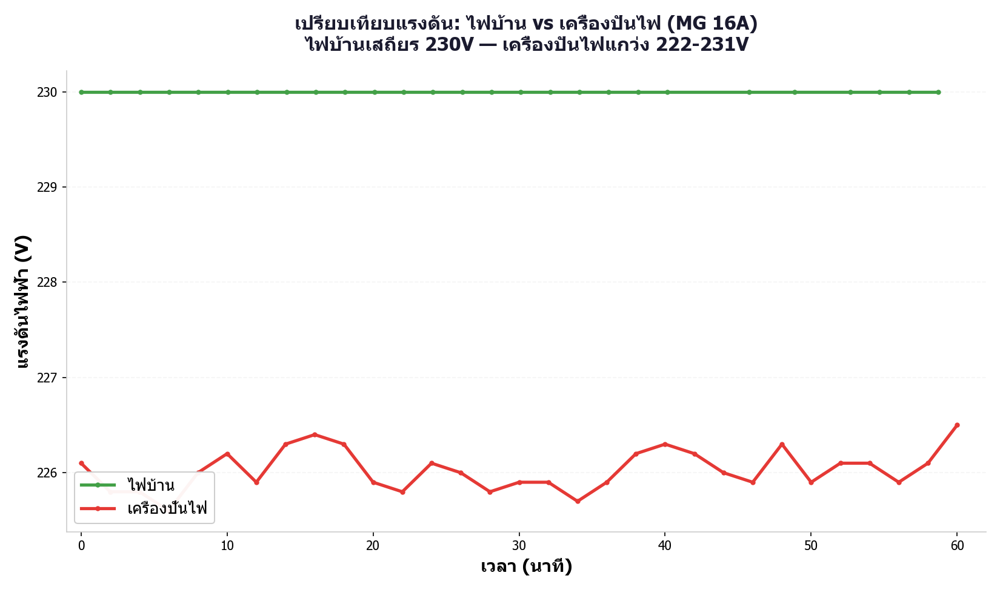
แรงดัน: ไฟบ้านเสถียร 230V — เครื่องปั่นไฟแกว่ง 222-231V
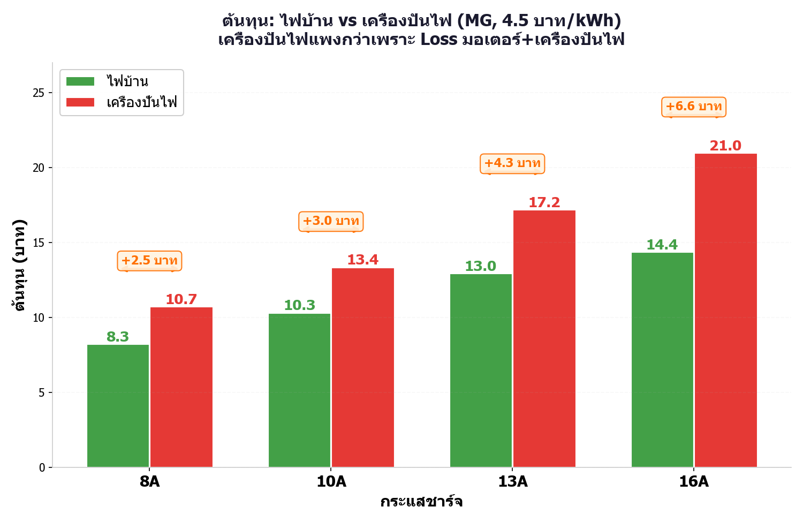
ต้นทุน: เครื่องปั่นไฟแพงกว่าเพราะ Loss มอเตอร์+เครื่องปั่นไฟ
5. ต้นทุนทุกกรณี
เรียงจากแพงสุด → ถูกสุด เขียว=ไฟบ้าน แดง=เครื่องปั่นไฟ
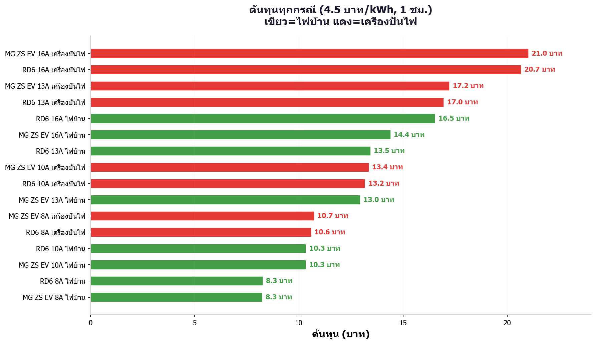
ต้นทุนค่าไฟทุกกรณี (4.5 บาท/kWh, 1 ชม.)
6. เทียบกับเครื่องปั่นไฟน้ำมัน ⛽
ถ้าใช้เครื่องปั่นไฟเบนซิน 5 kW แทน (อัตรากินน้ำมัน 0.4 ลิตร/kWh, น้ำมัน 40 บาท/ลิตร)
เครื่องปั่นไฟน้ำมันแพงกว่าเครื่องปั่นไฟแบต ~2.7 เท่า!
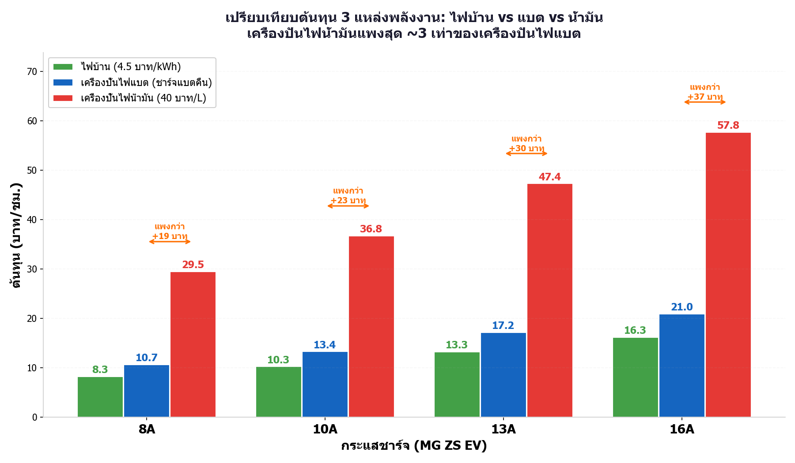
ต้นทุน 3 แหล่งพลังงาน: ไฟบ้าน vs แบต vs น้ำมัน (บาท/ชม.)
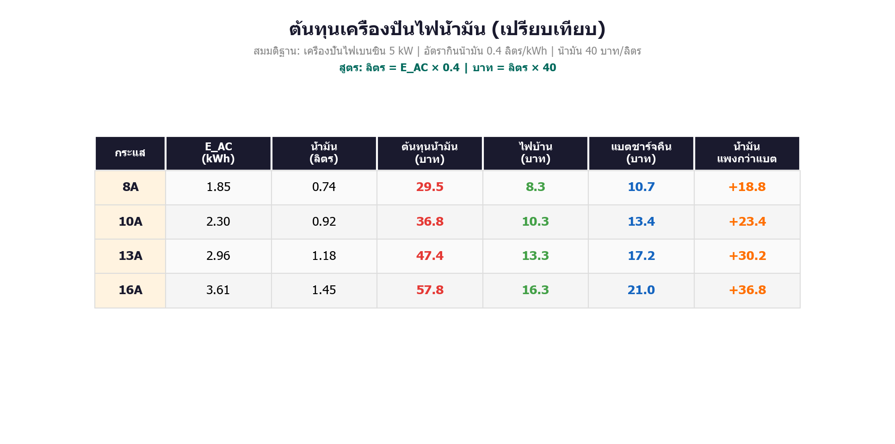
ตารางคำนวณ: ลิตร = E_AC × 0.4 | บาท = ลิตร × 40
สรุปข้อค้นพบ
- Loss ทั้งระบบ 47%: จากแบต 4.67 kWh รถได้รับเพียง 2.46 kWh (16A) — หายไปที่มอเตอร์(9%), เครื่องปั่นไฟ(15%), charger(32%)
- η ระบบรวม 53-60%: กระแสต่ำ → ประสิทธิภาพสูงกว่า (8A: 60% > 16A: 53%)
- แบต 7.2 kWh หมดเร็ว: ชาร์จ 16A แค่ 1 ชม. → แบตลด 65% (เหลือ 35%)
- SOC รถเพิ่มช้า: 1 ชม. ที่ 16A เพิ่ม SOC แค่ 4.9% — ต้องใช้ 84 นาที ถึงจะ +10%
- เครื่องปั่นไฟแพงกว่าไฟบ้าน: 16A แพงกว่า 6.6 บาท/ชม. เพราะสูญเสียพลังงานที่มอเตอร์+เครื่องปั่นไฟ
- ถูกกว่าเครื่องปั่นไฟน้ำมัน ~2.7 เท่า: น้ำมันเบนซินเสีย 29.5-57.8 บาท/ชม. แต่แบตเสียเพียง 10.7-21.0 บาท/ชม. (ประหยัด 18.8-36.8 บาท/ชม.)
- เหมาะใช้ฉุกเฉิน: แบต 7.2 kWh เล็กเทียบรถ 50-63 kWh — ชาร์จฉุกเฉินพอขับไปสถานีชาร์จใกล้สุด